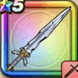

メタスラの剣
攻略班 6.0点 / かえん斬りメタル斬りぶんまわしミラクルソードメタルはやぶさ斬り※錬成で強化可能
くわしい特徴
【レベル別習得スキル】 Lv1メタル系+1ダメージ Lv1かえん斬り（消費MP：3）敵1体に威力130%のメラ属性斬撃ダメージを与える Lv10メタル斬り（消費MP：6）メタルボディを切り裂く一撃で、メタル系に斬撃ダメージを与える Lv15ぶんまわし（消費MP：9）振りまわした剣で、敵全体に威力120%の斬撃ダメージを与える Lv20ミラクルソード（消費MP：13）敵1体に200％の無属性斬撃ダメージを与え、与えたダメージの20％を自身のHPとして回復する。 Lv30メタルはやぶさ斬り（消費MP：17）メタル系にダメージを与え、それ以外には150%ダメージを与える斬撃攻撃を2回する Lv35スライム系へのダメージ+10% Lv45守備力+12 Lv50攻撃力+12錬成スキル改1怪人系へのダメージ+20%改2メタルはやぶさ斬り改（消費MP：25）メタル系に+3ダメージを与え、それ以外には200%ダメージを与える斬撃攻撃を2回する改3会心率+2%改4錬成ぶき特別演出解放・メガモン討伐結果発表時に特別演出が追加・武器の見た目に特別なエフェクトが追加 【限界突破スキル】 1凸スキルの斬撃・体技ダメージ+5% 2凸スキルの斬撃・体技ダメージ+5% 3凸スキルの斬撃・体技ダメージ+5% 4凸スキルの斬撃・体技ダメージ+5%